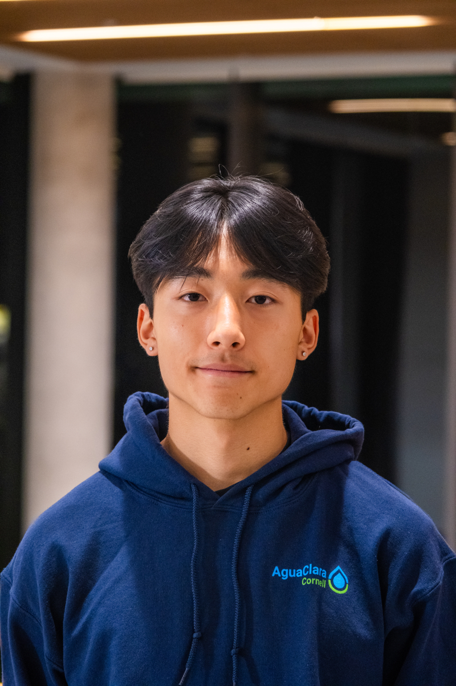

Jason L. Fu
Fullstack developer & CS + AI student @ Cornell

I'm a software engineer passionate about building AI-powered systems and scalable infrastructure that make real-world operations faster, smarter, and more accessible. At Cornell, I'm studying Computer Science with a minor in Artificial Intelligence, where I've led and contributed to projects spanning distributed systems, machine learning, and cloud-native development.
I've worked across full-stack development, AI systems integration, and hardware-software automation during my internships at HYC USA, where I built production-grade applications used by 50+ warehouse operators and integrated Meta Llama 3.1 models into in-circuit testing tools for teams at Apple, Tesla, and Meta.
I also design open-source technology for global impact through Cornell AguaClara, building an AWS-powered data ingestion pipeline that makes 40GB+ of research searchable for scientists, and developing POST, an Android app improving water-treatment operations for communities serving 100,000+ people.
Moreover, I've prototyped AI-driven matching systems, shipped mobile and web apps, and contributed to open-source projects with teams of 50+ developers.
Beyond my technical work, I love playing pickleball and working out at the gym.
- Email: jlf344@cornell.edu
- GitHub: github.com/jlfud
- LinkedIn: linkedin.com/in/jlfud
- Download Resume